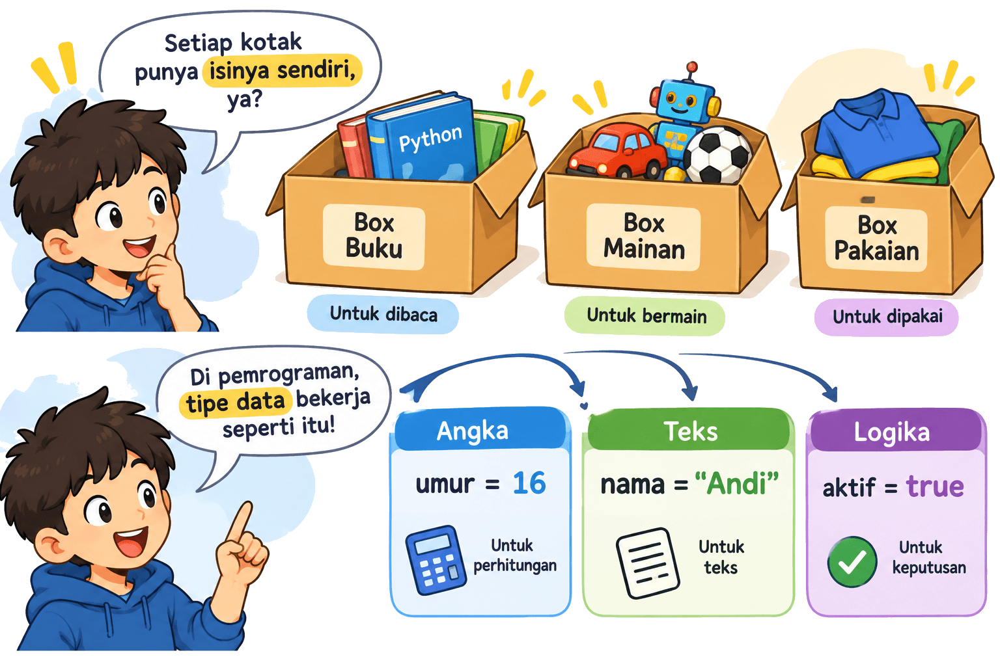
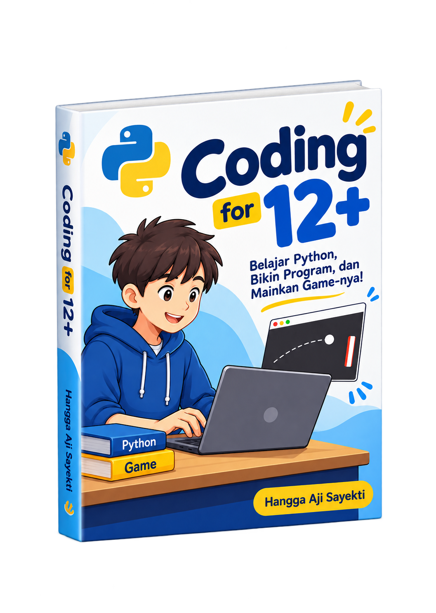
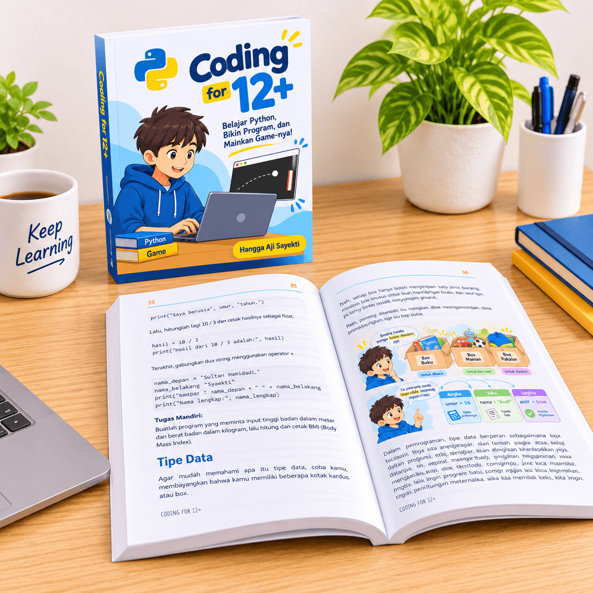
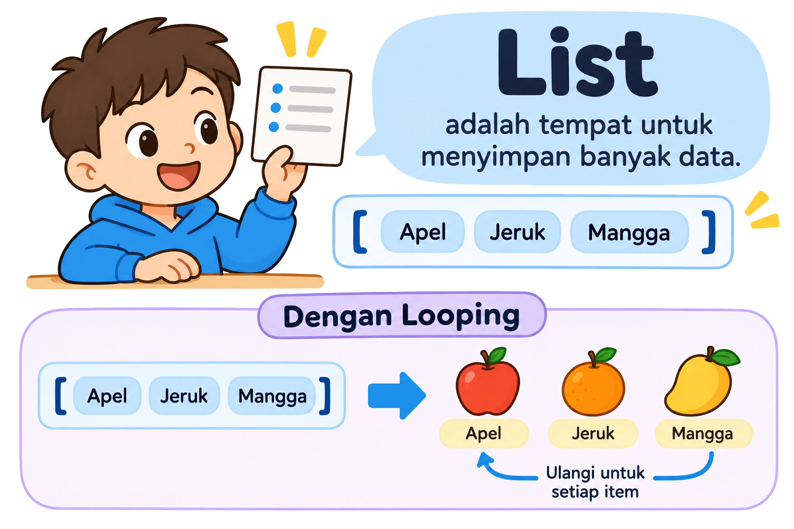
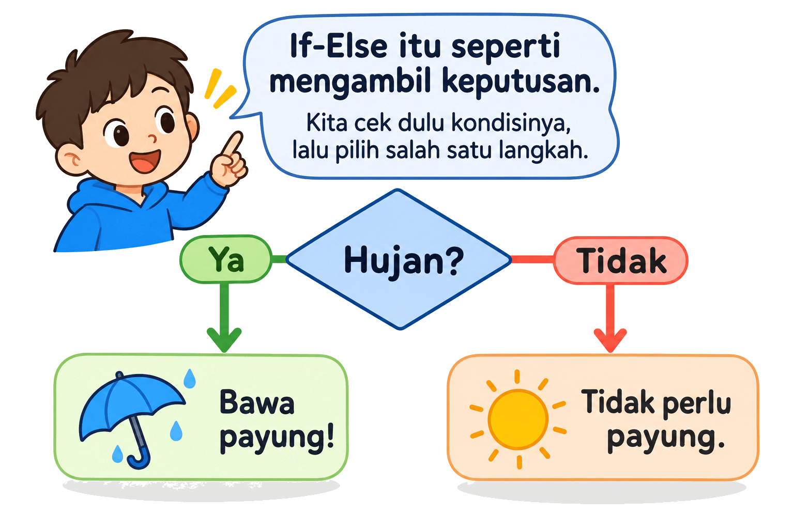

01 / FUNDAMENTAL
Tipe Data
Mengenal jenis data dengan analogi kotak yang punya isi dan fungsi berbeda.
Menurut saya, JANGAN!
Kecuali anaknya sendiri yang pengen 😁
Anak tertarik coding? Kenalkan langsung dengan Python!


Ceritanya berawal 4 tahun lalu (2022), ketika anak sulung saya berusia 12 tahun. Dia tertarik dengan coding, mungkin karena sering melihat ayahnya bekerja.
Saya pernah mengikutkannya ke kursus coding anak yang menggunakan Scratch. Metodenya bagus, tetapi ternyata bukan itu yang ia bayangkan.
“Kok kayak gini? Nggak kayak Ayah coding.”
Wkwkwkwk. Saya cukup paham maksudnya. Selama ini, yang ia lihat adalah baris-baris kode yang saya ketik, lalu dijalankan menjadi web atau aplikasi.
Dari situ saya mulai menyusun materi Python sendiri. Tantangannya ternyata bukan sekadar membuat program, tetapi bagaimana menjelaskan konsep pemrograman agar mudah dipahami anak.
Saya mencoba menggunakan analogi dan ilustrasi sederhana. Misalnya, memahami if-else lewat keputusan membawa payung saat hujan, atau mengenal tipe data lewat benda-benda yang akrab di sekitar kita.
Materi yang awalnya saya susun untuk anak sendiri itu akhirnya menjadi Coding for 12+. Buku yang kini sudah diperbarui dan bisa dinikmati lebih banyak anak yang ingin belajar coding.
Baca cerita lengkapnya di LinkedIn.
Bukan hanya membaca istilah teknis. Anak diajak memahami ide di balik kode lewat ilustrasi dan contoh sederhana.

Mengenal jenis data dengan analogi kotak yang punya isi dan fungsi berbeda.

Memahami cara menyimpan banyak data dan mengulang instruksi dengan contoh buah.

Belajar bagaimana program mengambil keputusan, seperti menentukan perlu membawa payung atau tidak.
Buku Coding for 12+ cocok untuk siapa saja yang ingin mulai mengenal pemrograman Python, baik secara mandiri maupun dalam kegiatan belajar bersama.
Untuk anak usia 12 tahun ke atas yang penasaran dengan dunia pemrograman dan ingin mulai belajar menulis kode Python secara langsung.
Untuk orang tua yang melihat anaknya mulai tertarik dengan coding dan ingin menyediakan bahan belajar yang bisa digunakan anak untuk mengeksplorasi dunia pemrograman secara mandiri.
Bisa digunakan sebagai bahan belajar untuk kegiatan ekstrakurikuler coding, dengan materi yang disusun bertahap serta dilengkapi contoh dan latihan.
Untuk guru atau pengajar yang membutuhkan referensi materi pembelajaran Python bagi pemula, khususnya anak usia 12 tahun ke atas.
Materi disusun untuk membantu pemula mengenal cara berpikir komputasional, lalu mencoba menerapkannya dalam kode Python.
Belajar dari nol. Tidak perlu punya pengalaman pemrograman sebelumnya.
# Program pertamamu
nama = "Dunia Coding"
print("Halo,", nama)
# Saatnya mencoba sendiri!Buku ini menggunakan Mu Editor, editor Python yang ringan dan relatif mudah digunakan pemula. Jadi, anak bisa lebih fokus memahami coding tanpa terlalu banyak pengaturan di awal.
Pilih format yang paling nyaman untuk belajar.
Praktis dibaca dari perangkat yang sudah dimiliki.
Pengalaman membaca dengan ilustrasi berwarna.
Pilihan cetak dengan isi hitam putih.
Harga buku cetak sudah termasuk ongkos cetak sesuai rincian paket.
Satu baris kode pertama bisa jadi awal dari banyak hal menarik.